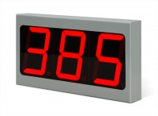
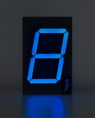
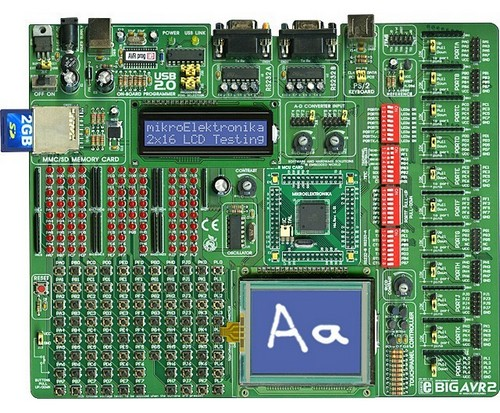

1.7.1. Индикаторы
Для воспроизведения символов, букв и цифр используют буквенно-цифровые индикаторы. Единичным называют индикатор, который отражает один символ или одну цифру. Одноразрядным называют индикатор, у которого выводы всех излучателей света не соединены друг с другом и выведены из корпуса для подключения к устройству управления. Сегментным называют индикатор, состоящий из нескольких излучателей, в котором отображение одного знака или символа обеспечивает один источник света. Матричным называют индикатор, внутри которого выводы излучателей света объединены определённым образом в матрицу, а подавая питание на определённую строку и столбец, инициируют свечение заданной ячейки.
К важнейшим параметрам индикаторов относят: угол обзора, число цветов, яркость, разрешение по горизонтали и вертикали, контрастность, потребляемую мощность, время отклика и прочее.
Светодиодные индикаторы выполняют из ряда размещённых определённым образом отдельных светодиодов. Подавая питание на некоторые полупроводниковые кристаллы светодиодных структур индикатора, получают излучение нужных светодиодов. Оно попадает непосредственно на прозрачный участок корпуса индикатора, или сначала на отражатели, свечение которых имеет вид знака или символа. Для питания светодиодных индикаторов необходимо постоянное напряжение от 1,6 до 3,5 В. Чтобы получить нужный цвет свечения, применяют светодиоды, генерирующие свет с необходимой длиной волны, или прежде чем выпустить из корпуса излучённый свет, пропускают через светофильтр.
Достоинства светодиодных индикаторов состоят в чёткой форме символов и знаков, в низком напряжении питания, в небольшой потребляемой мощности.
Недостатки заключёны в малой яркости и довольно большом потребляемом токе.

Жидкокристаллический индикатор (ЖКИ) – прибор для визуального воспроизведения информации, действие которого основано на электрооптических эффектах в жидких кристаллах (ЖК). Бывают мозаичные, матричные и аналоговые жидкокристаллические индикаторы.
Мозаичный жидкокристаллический индикатор состоит из двух герметично скреплённых по периметру стеклянных пластин, между которыми имеется зазор (5—20 мкм), заполненный ЖК. На внутренних поверхностях пластин нанесены прозрачные электроды и ориентирующие покрытия. Вид отображаемой информации зависит от формы электродов, которые представляют собой сегменты цифровых или буквенно-цифровых символов, условные символы, целые слова или элементы мнемосхемы.
Матричный жидкокристаллический индикатор имеет множество одинаковых элементов образованых на пересечении строк и столбцов электродов, расположенных взаимно перпендикулярно. Управляющие электрические сигналы подаются на элементы по каждой строке последовательно. Контраст изображения существенно увеличивается, а время записи кадра уменьшается при использовании в матричных индикаторах транзисторов, диодов и других нелинейных управляющих элементов. В таких активных индикаторах матрица управляющих элементов расположена на одной из подложек жидкокристаллического индикатора, а каждый элемент отображения соединён последовательно с управляющим элементом и управляется им.
Аналоговый жидкокристаллический индикатор используется для отображения информации в аналоговой (непрерывной) форме. Он представляет собой слой ЖК, ориентированный ограничивающими поверхностями электродных пластин. Измеряемое напряжение прикладывается между обоими электродами. Жидкокристаллические индикаторы нашли широкое применение в качестве цифровых индикаторов наручных и настольных часов, микрокалькуляторов, комнатных термометров, медицинских термометров и тонометров (приборов для измерения артериального давления), рекламных устройств, дорожных знаков, мониторов персональных компьютеров и т. д.
Схематичное изображение жидкокристаллического индикатора дано на рис. 7.1.
Рис. 7.1. Схема жидкокристаллического цифрового индикатора.
На рисунке цифрами обозначено:
1 – передняя пластина; 2 – электроды семисегментного знакоместа; 3 – выводы; 4 – токоперевод; 5 – герметик; 6 – задняя пластина; 7 – общий электрод.
Достоинства жидкокристаллических индикаторов заключено в чрезвычайно низком энергопотреблении и невысоком питающем напряжении. Недостатки состоят в малом времени наработки на отказ, в обязательном наличии источника внешнего освещения.